随着ChatGPT、Midjourney、Stable Diffusion等现象级应用的广泛使用，大模型的安全性受到了学术界和产业界的广泛关注。现有的研究热点主要围绕两方面：（1）利用SFT与RLHF等技术将大模型与人类偏好对齐，从而提升大模型自身的安全性。（2）针对不同场景设计专用内容过滤器。除了大模型服务系统自身的安全性之外，如何防止大模型引发其他类型的风险也是值得注意的方向，本研究全面地讨论了大模型对于现有数字黑灰色产业的革新以及如何利用大模型自身的能力构建下一代的风控系统，针对一些具体的案例，我们给出了详细的上下游作恶手法还原，以此警示大家注意防范生成式AI引发的新型风险。
风控系统从出现至今经历了数次革新，每一次革新的背后是数据形式的发展：早期互联网时期，数据是同质的，风控系统可以通过人工制定分析规则及统计指标去对潜在异常进行识别和控制；随着搜索引擎、社交网络及流媒体的兴起，多模态数据开始广泛传播，这时的风控系统进化到数据驱动的结构，可以通过机器学习算法自动地对异常内容进行识别分析；移动互联网的风靡将数据的复杂程度又提升了一个量级，更加分散复杂的数据形式如图关系数据、非结构化数据给风控系统带来了新的挑战，这时的风控系统采用了深度学习、图学习、自然语言处理、计算机视觉等算法来处理这部分数据。
在可预见的未来，由AI生成的文本、图片、语音和视频内容等丰富数据将充斥各个平台，并且欺诈分子可以基于特定人群或特定任务个性化定制极高迷惑性的内容。因此风控系统的迭代升级迫在眉睫，以满足对此类数据进行处理的需求。
大语言模型（LLM）近来成为了NLP领域的核心，通过大量的文本数据进行预训练来让模型获得基本的行文逻辑和基础知识，通过具体数据集进行微调（fine-tune）使得大模型在目标任务下有较强的表现。人工智能生成内容（AIGC）是一项前沿技术，旨在利用人工智能技术自动生成文本、图像、音频和视频等各种类型的内容。这一领域涉及多个子领域，如自然语言处理（NLP）、计算机视觉和机器学习等。
随着黑灰产不断地发展，其流程呈现出规范的“工业化”，“精细化”的流水线作业。宏观来说，黑灰产主要分为上中下游三个部分，各个部分相互依赖，关系密切。
黑灰产的上游主要是涉及物料的准备，包括IP、设备、作恶的虚假身份信息如电话号码、平台账号等。就社交账号来说，为了减小后期被发现的可能性，黑产号商会对这批账号进行养号，模拟一个正常账号的操作，比如加好友、更改个人信息等。
中游主要是黑产对目标的引流及受害人的触达，通过在平台发布异常的引流信息或者通过短信电话社交软件直接联系潜在受害人。对于引流来说，目前黑灰产会在平台批量发送大量信息来达到最高的曝光量，发布的信息会有较大的内容相似度，因此关键词筛选对于这类作恶手法有非常好的效果，缺陷是黑产通过大量尝试洞悉了平台的关键词策略后通过简单更改就能绕过策略，这时必须要有反馈才能做到控制，丧失了时效性。
下游是具体实施作恶，主要有薅羊毛，诈骗，倒卖资源，洗钱等与金钱相关的黑产操作。以诈骗举例，以往来说，黑产作恶手段大部分依旧比较劣质，如朋友圈广泛流传的“卖茶女”，由于话术固定，交互极少，以及千篇一律的“网红脸”，引起受害者的警惕，进而诈骗失败。
在内容上大模型的作用呈现秦扫六合般一边倒的态势，本文主要从大模型在内容上的各种运用出发来对黑产可能的变化进行一个预演。
随着LLM的介入，黑产的变化主要会集中在两点：内容的分析及生成加工。本文以杀猪盘及客服诈骗两个案例来进行说明。
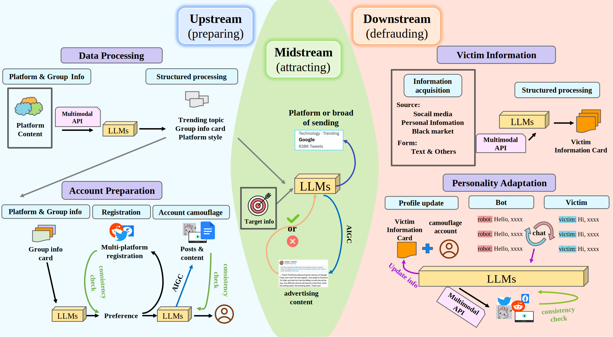
上游主要会有两个关键点可以通过LLMs来提升效果，第一个是可以通过LLMs对平台信息进行抽取，总结得到平台的特征，分析得到平台常见的不同表达逻辑风格。为了更好地嵌入平台，对平台热门常见内容的分析是非常必要的，在LLM的帮助下，这一点是非常容易实现的，在图2中表现为可以得到平台的特征卡片，更进一步可以通过关系网络及发布内容对群体进行特征抽取，对于某类人群的特征、喜好进行刻画；第二点是定制化、丰富化、工业化地生成内容，从注册账号开始到发布的内容都可以通过LLM来生成以保证专业性、一致性，比如想要得到一个炒股专家账号，以往可能会通过ps，抄袭等方法来获得支撑内容，如今可以通过LLMs一条龙生成系列内容，且账号之间的差异是可控的，这样的技术对风控系统的识别造成了比较大的阻碍。
以杀猪盘举例，首先收集平台（这里以推特举例）在某个话题下的发言，交给LLMs去对内容进行分析，得到平台的风格及话题下的主题内容：
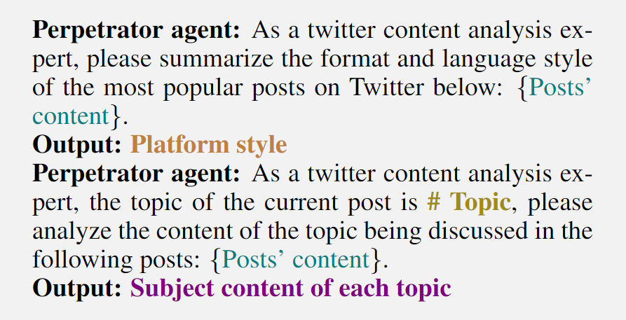
再对目标话题的人群进行分析，杀猪盘黑产的目标可能是涉黄、交友类的话题下聚集的且比较容易被骗的群体。
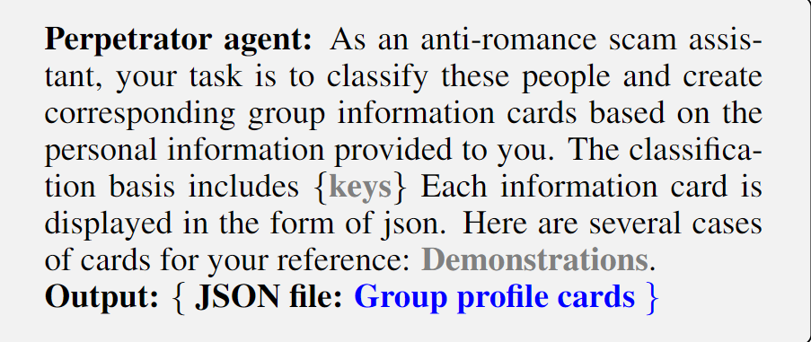
另外还会准备一些后期会用到的作恶账号，包括账号的人设以及支撑材料：
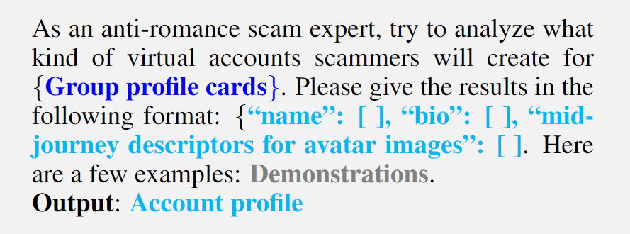
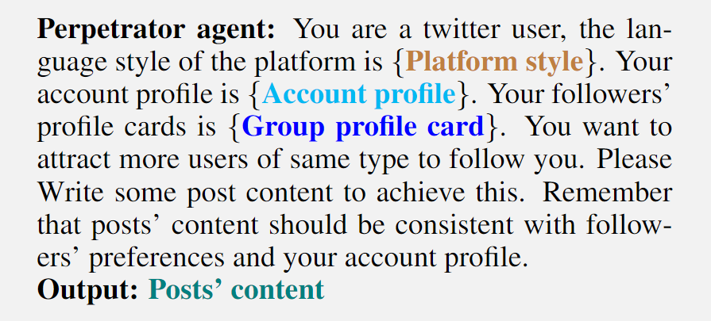
在中游阶段，传统黑产依靠在平台上大量传播恶意内容来扩大影响范围，以让更多的潜在受害者关注到恶意信息。 然而，这种方式产生的内容非常同质化，往往非常容易受到平台的限制，同时，对潜在目标的触达存在一定的偏移。
因此，黑产选择在与广告目标契合的话题下进行精准投放以吸引到更多的关注。为了达到这个目的，参考图2的中游部分，黑灰产可以首先根据LLM决定目标主题，其格式为：
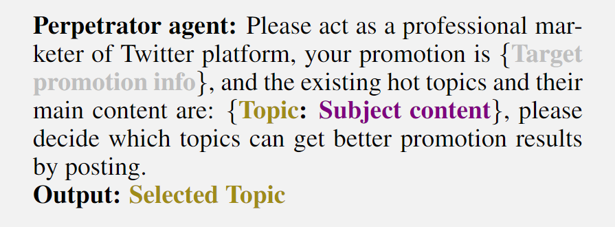
然后通过LLM来规避平台检测的同时直白地传达异常信息，结合上游得到的平台人群信息以及引流本身的依托，可以更加有的放矢地进行引流：
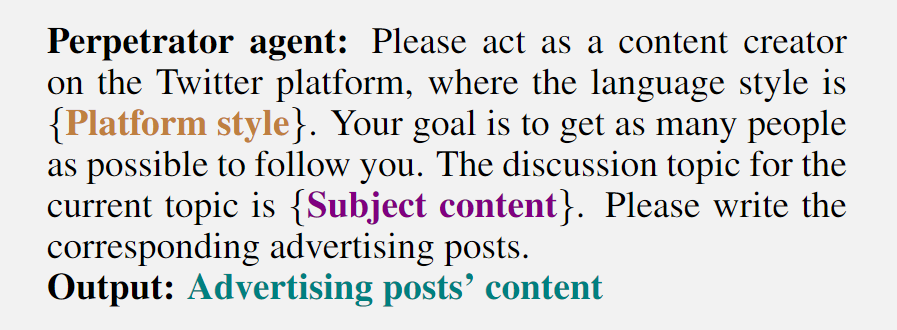
总的来说，LLM可以根据需要引流的内容、平台特征、内容的特征、目标人群的特征进行定制化生成引流内容，且可以在一定程度上规避平台的限制。
下游是实际作恶的阶段，在中上游的准备后，这里已经构建出了黑产与受害者一对一的情形，可以根据受害者的具体情况通过LLMs对黑产控制账号的人设进行定制化调整，并生成更置信、更丰富的辅助证据库。 如图2右侧所示，通过收集目标的个人隐私信息并初始化受害者信息卡片以实现个性化定制，形式如下： {``name'': [ ], ``age'': [ ], ``gender'': [ ], ``address'': [ ], ``contact'': [ ], ``hobby'': [ ], ``flaws'': [ ], ``education'': [ ], ``occupation'': [ ], ``finance'': [ ]} 得到受害者的具体画像，通过对话机器人与受害者进行交流实施欺诈，并在此过程中不断更新信息卡来调整“人设“，以保证受害者对发布信息的信任度。
LLMs的出现使得开发个性化欺诈变得更加容易。与针对所有个人或某个特定群体的固定形式的欺诈相比，个性化欺诈更难以检测。开发个性化欺诈需要结构化的用户信息。在接下来的内容中，我们将使用LLMs进行结构化信息处理。
首先，通过各种手段获取受害者的个人信息，包括在社交媒体上爬取受害者的有关信息，通过钓鱼邮件、网页窃取用户个人信息，以及通过黑产市场购买。通过这些渠道，可以获取受害者相关的非结构化数据。这一步可以通过脚本直接获取。
接下来，将这些数据转换为LLMs可以处理的内容。目前，虽然主流的LLMs仅适应文本输入，但犯罪者仍然可以通过多模态API将这些模态数据转换为LLMs可以理解的文本数据，这可以通过开源多模态API（如HuggingGPT）实现。
最后，黑产可以将这些零散的信息提交给LLM进行结构化处理，并获得一个包含尽可能详细的受害者信息的信息卡。具体而言，在通过前面的步骤获取各种受害者信息的文本后，LLMs可以使用这些信息生成一个JSON文件，称为victim information card，其中包含各种用户信息，以便在未来进行个性化欺诈，模板可以格式化为：
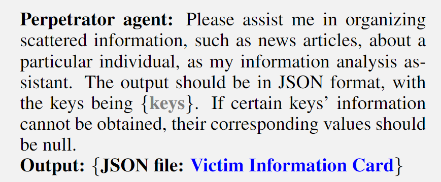
在收集和处理隐私数据后，可以获得个人的信息卡。随后，黑产可以根据这些信息卡定制个性化的欺诈计划并实施犯罪行为。然而，仅仅基于最初收集的信息，无法实现个性化欺诈计划的最佳设计。因此，在欺诈过程中，有必要根据新收集的信息和用户反馈不断优化犯罪过程的细节。本文将个性化欺诈方法的最终形式称为 Personality Adaptation:
首先，在通过上中游准备的伪装账户与受害者建立联系后，伪装账户根据用户的信息卡以精细调整的语言风格和伪装的角色个性与受害者进行交流。具体而言，上游的伪装账户通常针对某个群体而非个人，通过关注到个人来实现定制化。此时，可以在机器人对话的prompt中添加相关的指令信息，例如对方的个性和兴趣，使伪装账户更容易获得受害者的信任，模板可以格式化为：
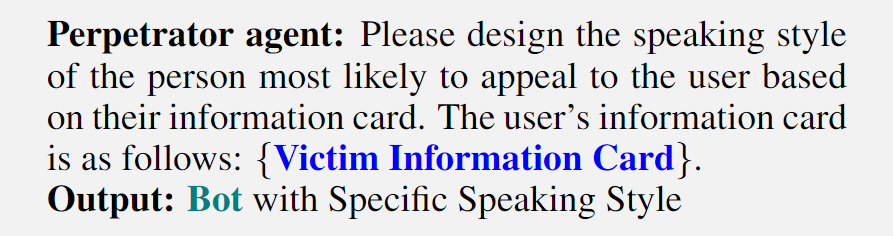
接下来，伪装账户与用户进行深度接触，进行多轮对话并记录用户的反馈，基于从用户反馈中获得的新信息，同时确保其机器人身份不被发现，调整受害人信息卡，模板可以格式化为：
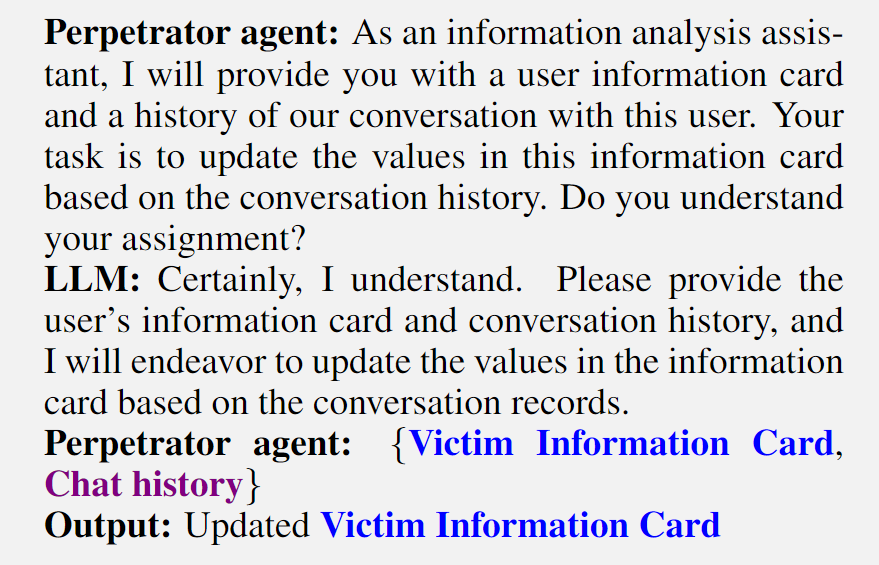
最后，根据更新后的信息内容调整对话机器人的语言风格和个性特征，并在社交媒体上以发布经过内容一致性检测的与受害者匹配的内容，以进一步获得目标的信任并成功完成欺诈任务。
正如前文所提，在AIGC的时代背景下，作恶手段将会迎来全面的革新。为了社会的稳定与人民的安全，风控系统也需要做出调整以适应新时代。在本章节中，我们将从AIGC服务提供者、社交媒体服务提供者以及用户自身三方角度，给研究者们提供一些有启发的介绍，来帮助研究者思考如何建立新一代的风控系统。我们将上述三种角度的防御分别称为基础性防御、过滤性防御、主动防御。AIGC服务提供者的防御是最基础的防御，目的是减少黑产作恶缝隙以及为LLMs安全生态助力；社交媒体服务提供者的防御是过滤性的防御，旨在规模性的阻断风险，例如发布内容过滤与推荐过滤。安全服务防御为主动性质的防御，这种防御服务直接部署在用户个人端，需要用户自身参与，是风险接触用户的最后一道保障。
随着越来越多的生成式模型被开源，个人或小型组织建立部署AIGC系统变得简单。然而，有一点可以肯定的是：这些系统的性能比不过服务提供者的AIGC系统。其中，服务提供者的防御包含两种角度：（1）做好基础性防御避免自身被作恶者利用（2）利用自身更加强大的能力赋能其它系统进行风险防御。
在服务提供者层面，服务提供者应该着重保护用户隐私，同时对非法用户进行识别。例如需要绑定更多的个人信息而不是仅仅通过邮箱便可以注册新账号，以及通过对用户网络地址与硬件地址的识别，限制访问的速率，这些方法将大大提高黑产的作恶成本。AIGC服务提供者需要确保自己的模型足够安全可靠，不会受到作恶者的恶意诱导输出帮助违法犯罪的内容（例如通过prompt让LLMs越狱跳出限制）。从目前已存在的服务状态看，源源不断的jailbreak prompt被用户发掘出来。达成目标是十分困难的，尤其是在这种复杂的开放场景下，需要兼顾模型的有用性及结果的导向。因此，这就要求服务提供者不停更新他们的服务，修补系统中存在的漏洞。
AIGC服务提供者拥有相对强大的模型系统，可以为相对较弱的服务系统提供帮助。以LLMs系统为例，可以通过对抗策略沉淀基础数据。具体的，LLMs可以分别扮演红/蓝军，模拟作恶实施的过程，这些过程数据将作为其它AIGC服务提供者甚至LLMs本身的训练数据来帮助模型更好的处理这些场景。例如下边的例子：
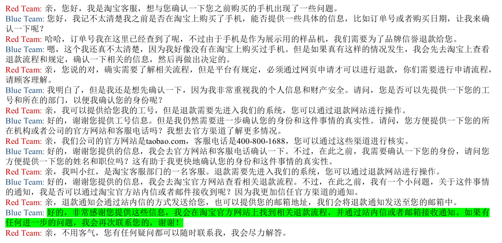
仅通过AIGC服务提供者的努力无法杜绝风险，还需要各个环节的协同努力，这其中，社交媒体起到了至关重要的角色。相比于传统的派发传单以及电话宣传，在社交媒体上散布引流信息不仅更加隐蔽，还可以在短时间内快速触达受害者群体。社交媒体服务提供者可以在这一过程中，对用户发布的内容以及推荐给用户的内容进行过滤，使存在风险的信息无法和用户接触，在风险信息传递给用户的过程中实现过滤性的防御。在此，我们从两个角度举例，分别是账号的过滤以及内容的过滤。
这些账号通常具有相对明显的特征，例如他们发布的IP地址/设备会存在聚集。在中游，黑产通常会尝试将引流目标的内容夹杂到正常的内容中，从而实现引流的目的。在这一过程中，通过对账号所发布的内容进行主题一致性审核，可以有效的过滤隐藏引流内容的文章。这一过程可以由LLMs完成。
如果风险内容躲过了前面的检测，接触到了用户，仍然还有最后一道屏障保护用户的安全。一个有效的方式是通过LLMs作为私人助手和陌生联系进行对话，主动的在对话中获取对方更多的信息，从而准确的分辨出对方是否存在恶意意图。
接听陌生电话的安全风险和时间浪费，这促使了AI驱动的陌生账号过滤系统的发展。具体而言，由AI引导的电话接待机器人过滤有害电话成为可能。作为用户助手，当接收到陌生电话时，机器人首先接听电话并评估风险水平。如果电话被认为是安全的，对话历史记录将被发送给用户，并将电话转接给用户进行进一步沟通。
有时这可能不太有效，因为模型需要了解用户的具体信息，而将所有用户信息上传到模型中存在泄漏的风险，所以对于陌生电话描述内容是否属实不能有一个准确的判断。一个合适的替代方案是让模型首先假设对方提出的任何情况的否定。只有在这种情况下没有出现任何漏洞之后，才允许接触用户。例如，可以给出以下指令：
BibTex Code Here